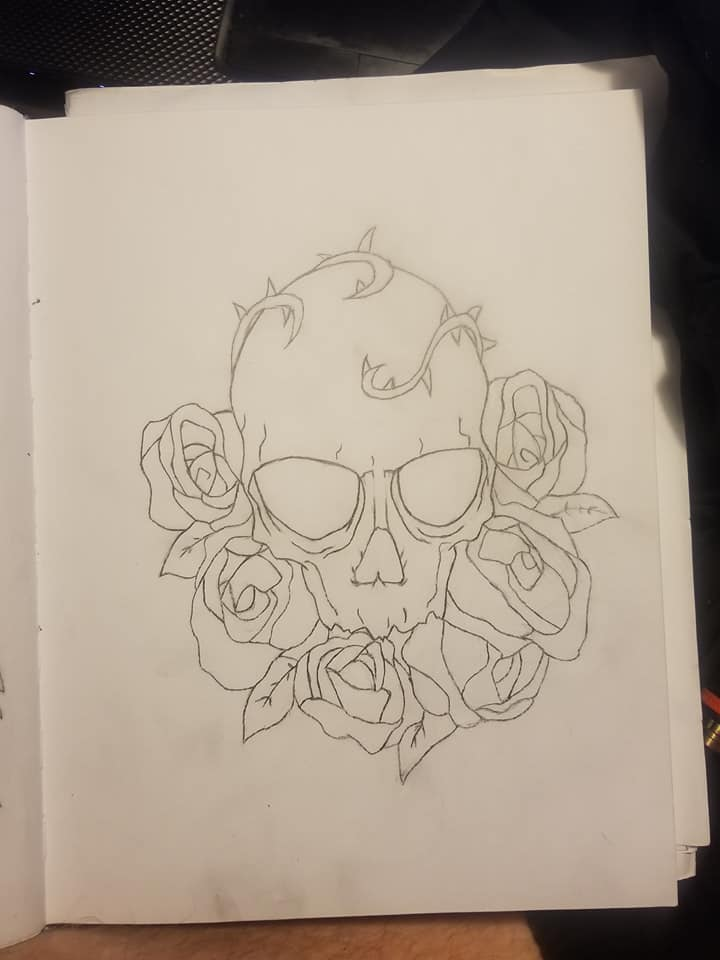

I have some different interests, but they are also pretty common. My interests probably do not differ from you guys by much, so for a few examples my main interests are; drawing, playing games, technology (programming/coding in particular), and so on. As you can see, they are pretty basic, but below I will have a list of my main interests if you would like to know more of them. Each of them has meaning to me, they aren't just interests for no reason, afterall. Drawing helps me focus, or calm down. It is all about expression, and as I draw I figure out more ways to improve and will sometimes go back to old drawings to fix them- it's art, it can't be wrong, or right, it is all about how you as the artist feels and wants to perceive something.
You have complete control over it. Playing games is what I have always enjoyed doing. My grandma and I used to play videogames together all the time when I was little. Then a lot of my friendships were based around games, or we'd end up just playing games in general. It's always been a big part of my life, but I just haven't had as much time lately, as I used to when I was younger. Technology has always intrigued me, and it is ultimately what I want my future to revolve around. For my career, I'd like to be a computer programmer/coder for software. I've wanted to build my own game eventually for a long while since I started gaming, I always thought it would be amazing and something in my image, similar to the art aspect. So there are a few of my interests, and reasoning behind. Not all the others are as sentimental.

My main interests
- Drawing
- Playing games
- Technology
- Listening to Music
- Hanging out with friends
- Working, and earning more money
- School/College
- Graphics Design (photoshop, animation, etc.)